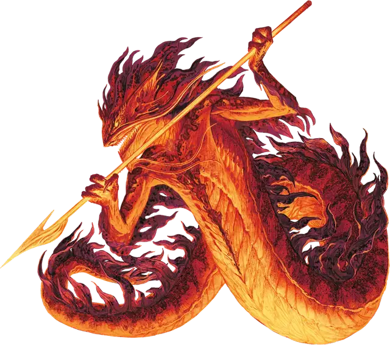

Саламандра
Salamander
Большой Элементаль, Нейтральный Злой

Класс Защиты 15 Инициатива +2 (12)
Хиты 90 (12к10 + 24)
Скорость 30 футов, Лазания 30 футов
| мод | спас | ||
|---|---|---|---|
| СИЛ | 18 | +4 | +4 |
| ЛОВ | 14 | +2 | +2 |
| ТЕЛ | 15 | +2 | +2 |
| мод | спас | ||
|---|---|---|---|
| ИНТ | 11 | +0 | +0 |
| МДР | 10 | +0 | +0 |
| ХАР | 12 | +1 | +1 |
Уязвимость к урону Холод
Иммунитеты Огонь
Чувства Тёмное зрение 60 футов, пассивное Восприятие 10
Языки Первичный (Ignan)
Опасность 5 (1 800 опыта; БВ +3)
Особенности
Аура огня. В конце каждого хода саламандры каждое существо (по её выбору) в 5-футовой Эманации, исходящей от саламандры, получает 7 (2к6) урона Огнём.
Действия
Мультиатака. Саламандра совершает две атаки Пламенным копьём. Она может заменить одну из этих атак использованием Сдавливания.
Пламенное копьё. Бросок рукопашной или дальнобойной атаки: +7, досягаемость 5 фт. или дистанция 20/60 фт. Попадание: 13 (2к8 + 4) Колющего урона плюс 7 (2к6) урона Огнём. Промах или попадание: Копьё магическим образом возвращается в руку саламандры сразу после совершения дальнобойной атаки.
Сдавливание. Спасбросок Силы: Сл 15, одно видимое саламандрой существо Большого размера или меньше в 10 футах. Провал: 11 (2к6 + 4) Дробящего урона плюс 7 (2к6) урона Огнём. Цель становится Схваченной (Сл освобождения от захвата 14); пока длится захват, она также Опутана.
Бонус мастерства +3
Среда обитания Подземье, Стихийный план Огня
Сокровища Оружейные
Саламандры
Змееподобные творцы ревущего пламени
Саламандры — это змееподобные обитатели Стихийного плана Огня. Они убеждены, что огонь обнажает самую чистую суть всех вещей, и наслаждаются горением и плавлением, находя мимолётную красоту и удивительные оттенки в том, как пылает разное топливо — древние леса, шедевры искусства или живые существа. Для саламандр те, кто не способен выдержать их жар, — всего лишь пепел, временно притворявшийся чем-то иным. Они редко питают настоящую злобу к кому-либо, но считают создание впечатляющего пламени важнее той боли и потерь, что их огонь приносит.
Обычно саламандры вполне довольны жизнью на Стихийном плане Огня, где среди сполохов пламени творят причудливые недолговечные шедевры. Некоторые, впрочем, путешествуют по иным планам и мирам, чтобы испытать тамошнее пламя или устроить пожары невиданного прежде размаха.
Большинство саламандр надменны, но любопытны. Они стремятся создавать искусные пожары или сжигать то, что ещё никогда не горело. Чужакам они охотно объясняют свою работу — прежде чем выяснять, как горят сами чужаки. Саламандры излучают сильный жар, который передаётся и их пылающему оружию.